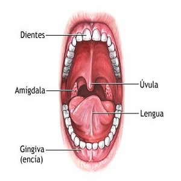
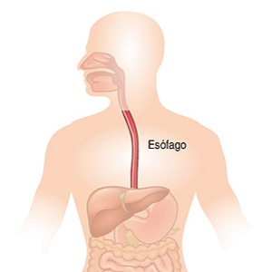
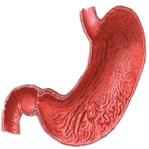
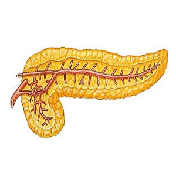
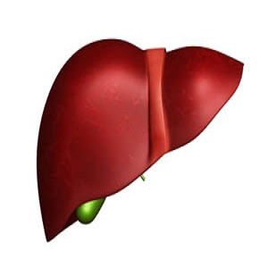
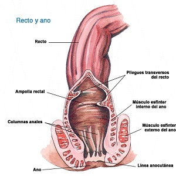
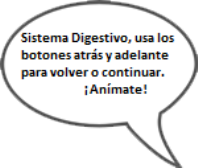

| Cómo se ve | Concepto |
|---|---|
|  | Boca Es el comienzo del sistema digestivo, abertura por donde ingresan los alimentos al organismo. Está compuesta por: Labios, lengua y dientes. |
 |
Glándulas salivales Son glándulas exocrinas en el sistema digestivo superior que producen la saliva. La saliva es un líquido incoloro de consistencia acuosa o mucosa. Su función, entre otras, es iniciar la digestión de los alimentos. |
|  | Esófago Es un conducto o músculo membranoso que se extiende desde la faringe hasta el estómago. Empieza en el cuello, atraviesa todo el tórax y pasa al abdomen a través del orificio esofágico del diafragma. |
|  | Estómago El estómago es un órgano en el que se acumula comida. Consta de varias partes que son: fundus, cuerpo, antro y píloro. Es el encargado de hacer la transformación química por medio de los jugos gástricos. |
|  | Páncreas Es una glándula que segrega hormonas a la sangre para controlar los azúcares y jugo pancreático que se vierte al intestino a través del conducto pancreático, interviene y facilita la digestión, sus secreciones tienen gran importancia en la digestión de los alimentos. |
|  | Hígado El hígado es la mayor víscera del cuerpo. Pesa 1500 gramos. Consta de cuatro lóbulos, derecho, izquierdo, cuadrado y caudado; los cuales a su vez se dividen en segmentos. Es de forma ovalada o ligeramente piriforme y su diámetro mayor es de unos 5 a 8 cm. |
 |
Vesícula Biliar Es un órgano que forma parte del aparato digestivo, está situada por debajo del hígado. La función de la vesícula es almacenar y concentrar la bilis secretada por el hígado. |
 |
Intestino Grueso Es la penúltima porción del tubo digestivo, formada por el ciego, el colon, el recto y el canal anal. Se limita a absorber los minerales, el agua y las vitaminas (K y B12). También compacta las heces y almacena la materia fecal en el recto hasta que es expulsada a través del ano. |
 |
Intestino Delgado Absorbe los nutrientes necesarios para el cuerpo humano, mide aproximadamente 3.5 m de largo en una persona. Se localiza entre dos esfínteres: el pilórico, y el esfínter ileocecal, que lo comunica con el intestino grueso. |
|  | Recto y Ano Es el último tramo del tubo digestivo, situado inmediatamente después del colon. Recibe los materiales de desecho que quedan después de todo el proceso de la digestión de los alimentos, constituyendo las heces. Parte final del intestino grueso, de allí las heces salen a través del ano. |
